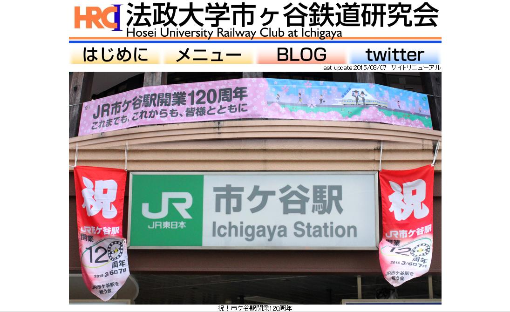

法政大学市ヶ谷鉄道研究会
(Hosei University Railway Club
at Ichigaya)
最終更新日：2014.11.28
法政大学市ヶ谷鉄道研究会のホームページへようこそ！
鉄道をこよなく愛する約三十人の学生による、家庭的なサークルです。
入会希望の方、当会に興味のある方は、外濠校舎地下１階B110会議室までお越しください。
活動日：月・火・木曜日
リアルタイムな情報はブログやTwitterで！
ブログはこちら（随時更新中・鉄研に興味のある方は是非！）
Twitterはこちらから！（アカウントは ＠hoseitekken）
|
 ページをリニューアルしました。画像クリックで新ページヘ移動します。 |
郵便物は下のあて先までお願いします。
〒１０２－００７１ 東京都千代田区富士見２－１７－１ 法政大学市ヶ谷キャンパス内 鉄道研究会
メールでのお問い合わせは、houtetsu△hotmail.co.jpまでお願いします。(△を@に置き換えて送信してください。)